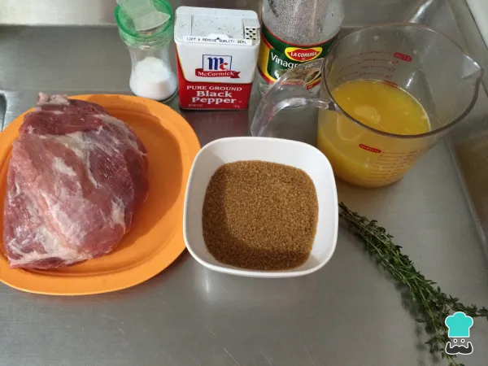
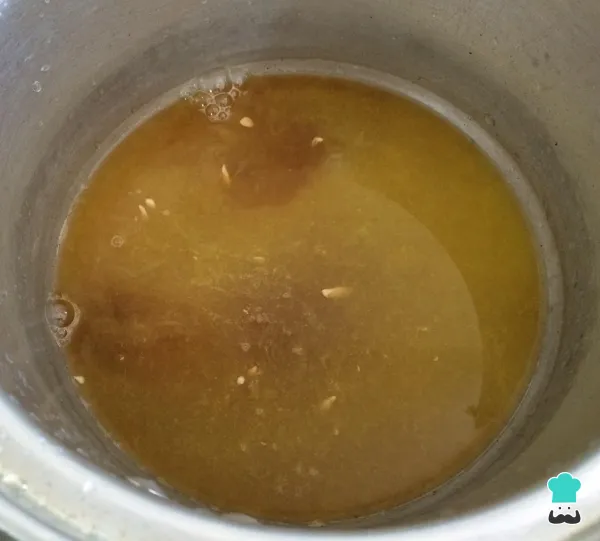
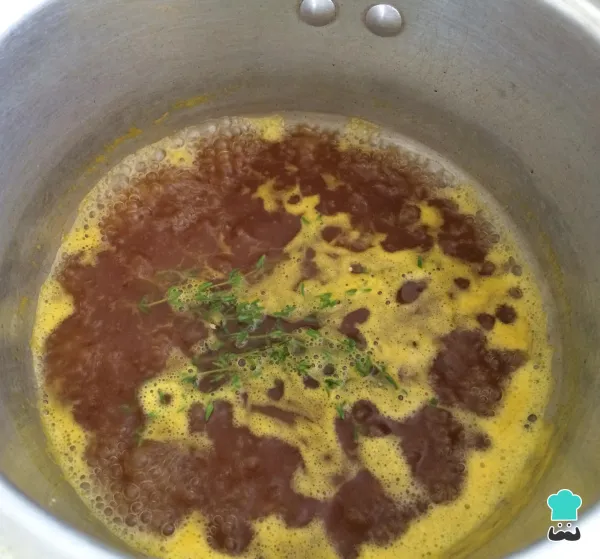
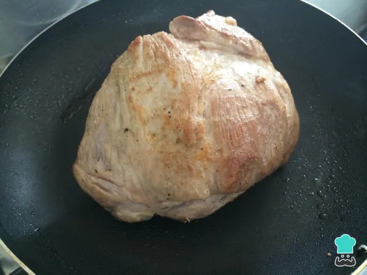
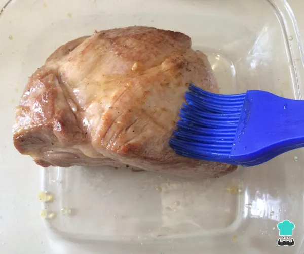
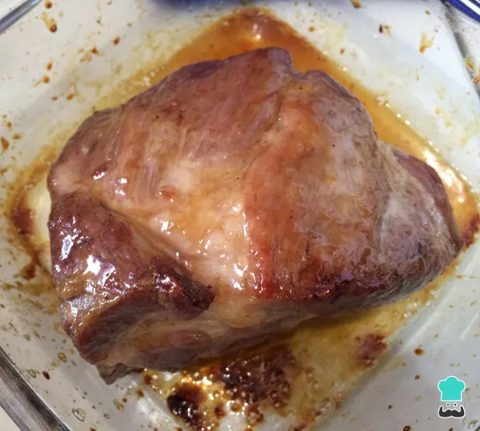

Receita de carne de forno
O lombo de porco é uma carne magra, porém considerada uma das partes mais suculentas do animal. Para ser feita no forno, é preciso tomar alguns cuidados para que não resseque demais.
Se você está procurando uma receita de carne no forno para impactar tanto visualmente, como no paladar, arrisco dizer que você acabou de achar! Esse lombo de porco fica bem macio, além de pegar todo o sabor do recheio, tendo o molho de laranja como toque final. Aqui, precisaremos apenas de tempo, porque é necessário duas horas de forno. Mas garanto que todo o tempo valerá a pena.
Confira o passo a passo dessa carne no forno: lombo de porco recheado com molho de laranja aqui no TudoReceitas!
👥 7 convidados
⏰2h 30m
🔥Dificuldade média
Características adicionais: Custo média
Ingredientes:
- 1,45 quilogramas de Lombo de porco
- 1 unidade de Tomate
- 1 unidade de abobrinha Italiana
- 6 fatias de queijo mussarela
- 100 gramas de bacon
- 50 mililitros de suco de limão
- 2 unidades de alho
Você também pode acessar: Lombo caramelizado
Como fazer o lombo:
- Para começar fazendo esta receita de lombo de porco caramelizado no forno o primeiro passo é reunir
todos os ingredientes.

-
Comece por preparar a redução de laranja: em uma panela adicione o suco das laranjas, o vinagre e açúcar mascavo, misture muito bem até dissolver o açúcar e cozinhe em fogo baixo por 10 minutos.

- Adicione os ramos de tomilho, baixe o fogo e cozinhe até obter uma consistência de molho ligeiramente espesso. Desligue o fogo, retire o tomilho e reserve.

- O próximo passo desta receita de lombo de porco caramelizado no forno é temperar o lombo com sal e pimenta e selar em uma frigideira com um pouco de óleo quente.

- Quando o lombo estiver dourado de todos os lados, coloque-o em um refratário e, com a ajuda de um pincel, espalhe nele a redução de laranja. Leve a assar no forno preaquecido a 180ºC durante 45 minutos.

- Retire o lombo do forno, no mínimo 3 vezes, para adicionar mais um pouco da redução. Desta forma conseguirá que o lombo fique bem caramelizado e saboroso.

-
Assim que o lombo estiver caramelizado, deixe repousar por alguns minutos para que os sucos assentem. Corte o lombo de porco caramelizado no forno em rodelas grossas e espalhe mais um pouco da redução. Sirva acompanhado de arroz branco e salada fresca, bom apetite!
Se você gostou da receita de Lombo de porco caramelizado no forno, sugerimos que entre na nossa categoria de Receitas de Lombo.